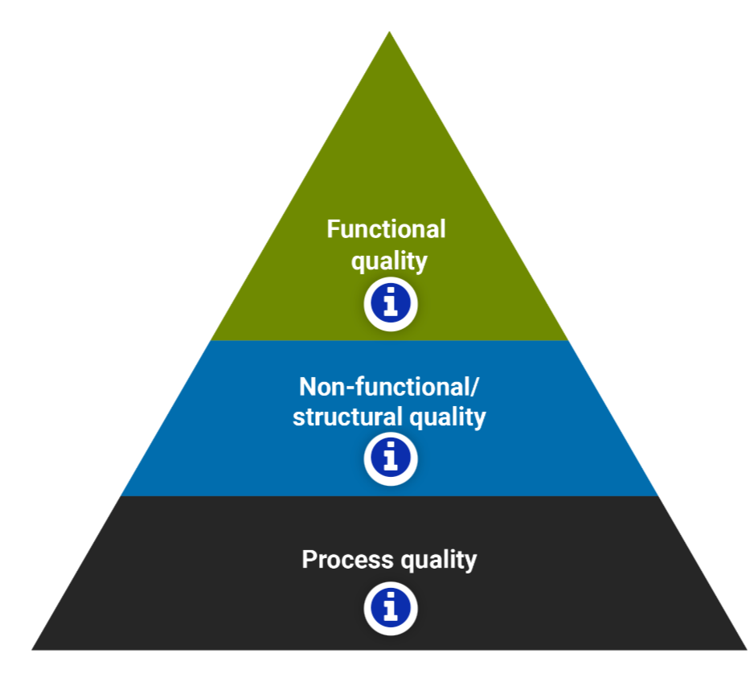
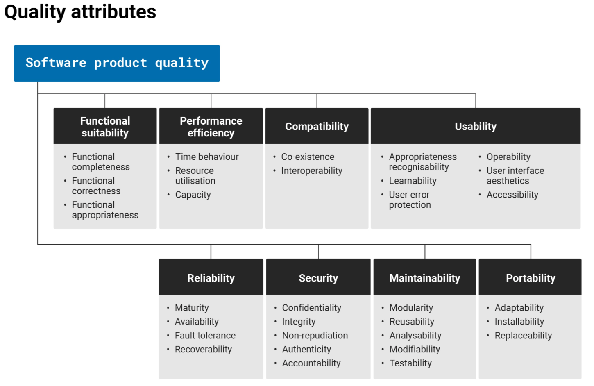
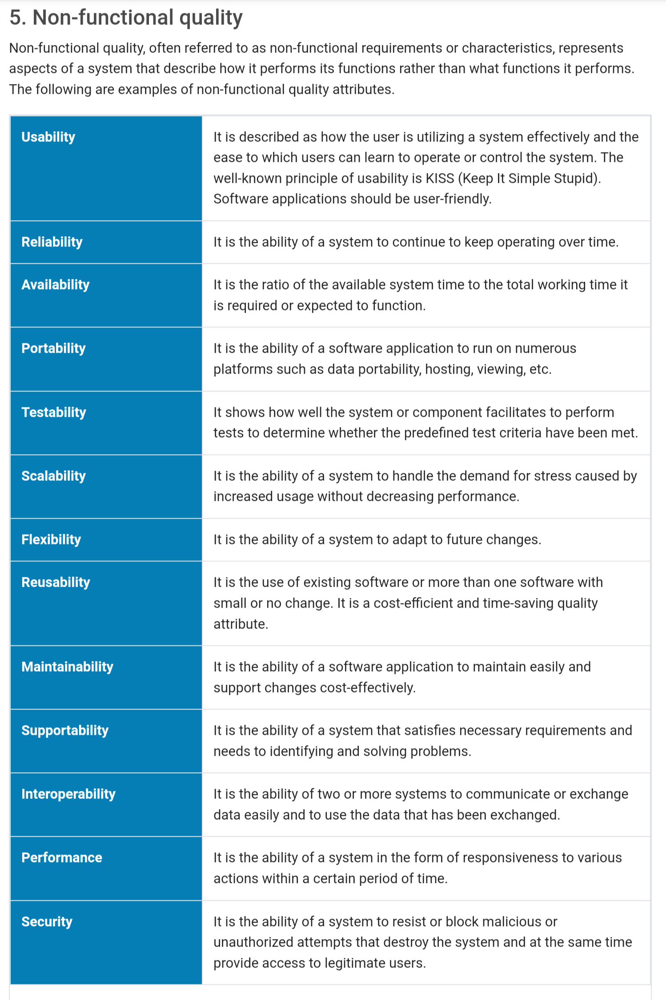
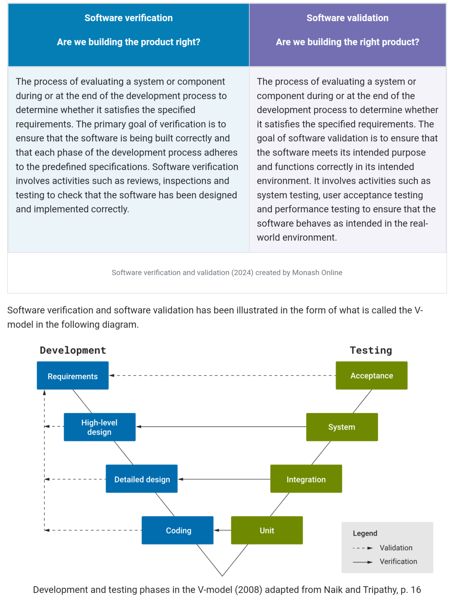
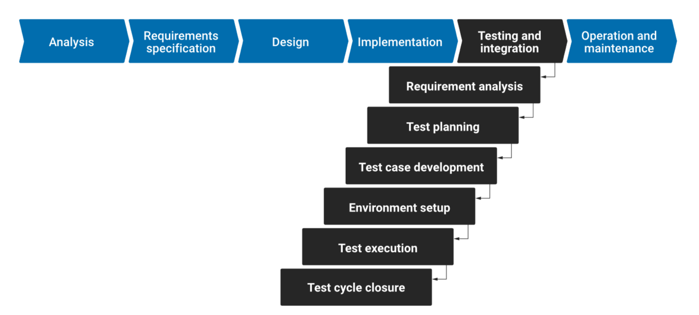
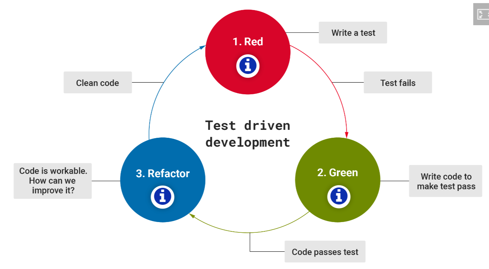
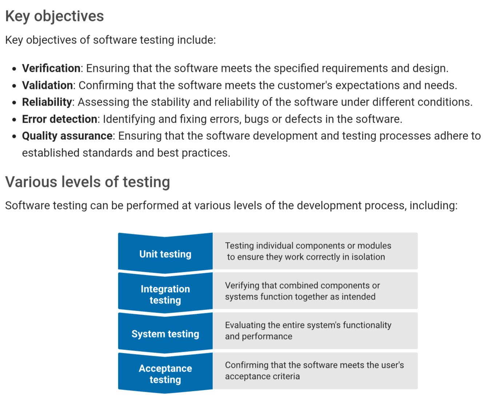

Module 4: Software Quality and Testing
Principles, methodologies, and best practices related to software
quality assurance (SQA) and testing.
Introduction to Software Quality Assurance (SQA)
SQA is a set of activities and processes aimed at ensuring software
proudcts meet specified quality standards and fulfill customer
expectations.
3 Goals of SQA:
- Ensuring product has desired quality properties
- Ensuring process by which product was built is of sufficient
quality
- Ensuring QA of product and process is of sufficient quality
What is software quality?
"The degree of conformance to explicit or implicit requirements and
expectations" (IEEE n.d.)

Functional quality (meeting the specified requirements)
- The product's compliance with functional (explicit) requirements
and design specifications
Non-functional/ structural quality
- The product's inner characteristics and architecture, i.e.
structural (implicit) requirements, e.g. usability, maintainability,
uderstandability, efficiency, security and ethics
Process quality
- A repeatable development process that reliably delivers quality
software while meeting delivery dates and budgets
What are the quality attributes of software systems?
Features that facilitate the measurement of a software product's
performance by software testing professionals.

Functional quality
Functional completeness
- The measure of how well the system of a component meets all the
stated requirements of the user. it measures the degree to which
the system or a component includes all the features, functions, and
capabilities required.
Functional correctness
- The measure of how accurate and reliable the system or a component
is in performing its intended task. It tests the ability of the
system or a component to follow the rules and specs correctly.
Functional appropriateness
- Measures the degree to which the system or a component meets the
user's expectations. It evaluated the system's or the component's
ability to perform the tasks it is expected to do in a way that
satisfies the user.
Non-functional quality

SQA Approaches
Software Verification and Validation (the V-model)
Verification: Being built correctly?
Validation: Building the right thing?

Waterfall-style SQA

Key characteristics:
- Sequential flow: each phase must be completed before the next one
begins
- Document-driven: emphasis is placed on extensive documentation
at each phase
- Rigid and linear: changes are difficult to accommodate once a phase
is complete
- Well-suited for stable requirements: works best when the
requirements are well understood and unlikely to change
Test-driven development (TDD)
Software development methodology that revolves around a simple iterative
process: write a test, write the minimum amount of code to make that
test pass, refactor the code, and repeat. This is referred to as the
"Red-Green-Refactor" cycle.

Red: write a test that defines a function or improvements of a function,
which should fail initially because the function or feature is not yet
implemented. The "Red" phase indicated the test is failing.
Green: write the minimum amount of code necessary to make the test pass.
The goal is not to write perfect or complete code at this point, but to
make the test pass.
Refactor: clean the code while keeping it functional. Refactoring
involves improving the structure of the code without changing its
behaviour. After refactoring, the tests are run again to ensure the
code still works as expected.
Benefits of TDD:
- Early bug detection
- Improved code quality
- Documentation - tests serve as documentation
- Confidence in code changes
May not be the best fit for everyone.
Software Testing
What is software testing?
Process of evaluating and verifying that a computer program or system
functions as intended. It identifies error, bugs, or defects, and
ensures software meets specified requirements.

Large-scale complex software system
Challenges:
- Software can be complex
- Requirements are subject to change
- Small changes can have large repercussions
- Time and resources are limited
- Lack of access to real-world environments
- Difficulty in reproducing errors
- Some quality requirements are difficult to specifiy in an
unambiguous way